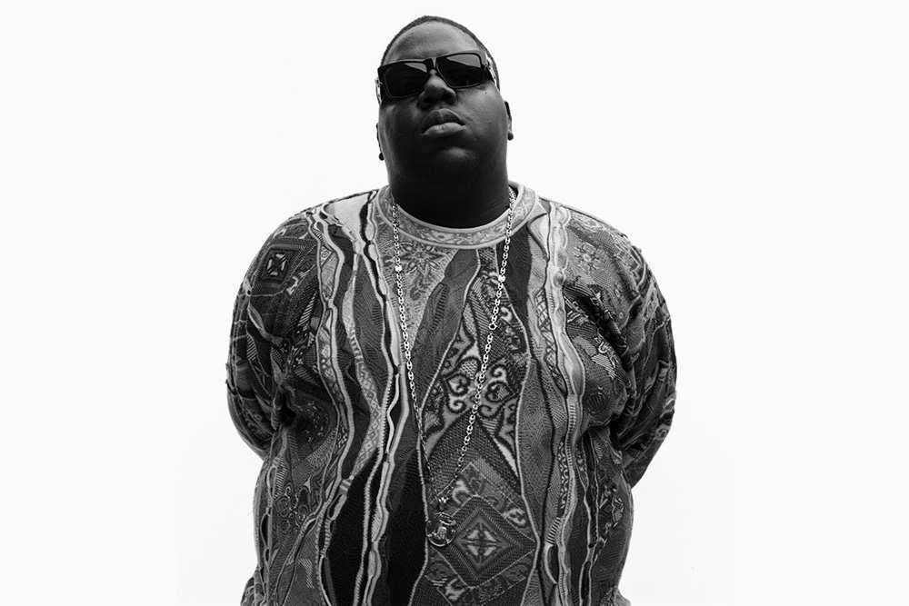
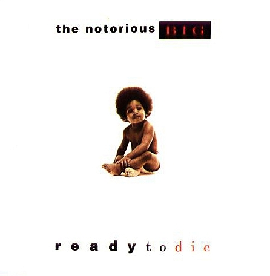
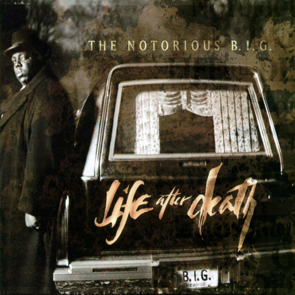

The Notorious B.I.G.

Storia
Biggie inizia a rappare nell'adolescenza, esibendosi per strada con due gruppi, gli Old Gold Brothers e i Techniques. Dopo essere stato rilasciato dalla galera realizza un demo con lo pseudonimo di Biggie Smalls, soprannome che ricorda quello utilizzato da bambino, ancora attuale data l'altezza di circa 1,90 m e il peso di circa 135 kg. Il lavoro non è registrato con intenti seri, ma viene promosso dal dj newyorkese Mister Cee, che ha precedentemente lavorato con Big Daddy Kane, e viene ascoltato dal redattore della rivista The Source.
Ready to Die
Il 4 agosto 1994 Wallace sposa la cantante R'n'B Faith Evans nove giorni edcneuhecndufbheunxidr dopo averla conosciuta ad un incontro fotografico per la Bad Boy Records. Quattro giorni dopo il rapper raggiunge la 27ª posizione nella Billboard 200 con il primo singolo solista, Juicy, che anticipa l'album. Il 13 settembre 1994 viene pubblicato il primo disco solista, Ready to Die, che raggiunge la 13ª posizione nella Billboard 200, vince quattro dischi di platino e permette all'artista di vincere il premio "Rapper of the Year" ai Billboard Awards.
Il lavoro viene pubblicato in un periodo in cui la West Coast domina il mercato hip hop statunitense e secondo la rivista Rolling Stone "riporta l'attenzione sull'East Coast rap". Oltre a Juicy dall'album vengono estratti altri due singoli: Big Poppa, che vince il disco di platino e raggiunge la prima posizione nella classifica statunitense di singoli rap ed entra nella top10 della Billboard Hot 100, e One More Chance, in collaborazione con la moglie Faith Evans, Aaliyah e Mary J. Blige che entra alla quinta posizione e raggiunge la seconda nella classifica ufficiale statunitense, diventando il singolo con il debutto nella posizione più alta della storia, assieme a Scream di Michael e Janet Jackson, fino a quel momento.

Life After Death
Durante la registrazione del suo secondo album, che inizialmente avrebbe dovuto chiamarsi Life After Death... 'Til Death Do Us Part, poi abbreviato in Life After Death, Wallace viene coinvolto in un incidente automobilistico in cui si rompe la gamba sinistra e viene costretto ad un periodo in sedia a rotelle; dopo l'episodio sarà costretto ad appoggiarsi ad un bastone da passeggio per il resto della vita.
Nel gennaio del 1997 il rapper deve pagare 41.000 dollari come risarcimento ad una persona che sostiene di essere stato picchiato e derubato da Wallace e dal suo entourage nel maggio del 1995. Dopo questa serie di incidenti, decide di concentrarsi sulle cose che ritiene importanti nella vita, "My mom... my son... my daughter... my family... my friends are what matters to me now" (mia madre... mio figlio... mia figlia... la mia famiglia... i miei amici sono le cose più importanti per me ora).

Per altre info
Torna all'indice